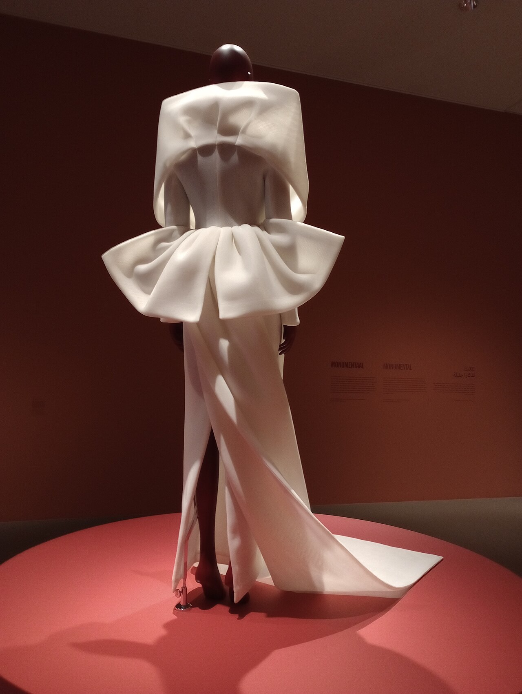

Pleating is the art of giving permanent three-dimensional architectural form to a two-dimensional sheet of textile. When executed in crisp natural silk organza, pleating transcends decorative trimming to become a sculptural discipline — creating accordion chemisiers, origami tessellations, and cascading flounces that retain their razor-sharp geometry throughout active movement.
Yet in contemporary garment manufacturing, true silk pleating has become an exceedingly rare craft. The vast majority of pleated garments sold in fast-fashion boutiques are made from synthetic polyester, which is melted under extreme industrial heat (220°C) into permanent plastic creases. 100% natural silk organza possesses no synthetic polymers. How, then, does a natural protein fiber acquire 'pleat memory'? In this treatise, we explore the thermal glass transition phases of natural sericin protein matrices, analyze the physics of hand-folded kraft paper moulds, and detail our steam-moulding protocols at 181 Mercer Street.

1. The Biochemistry of Silk Fibroin and Sericin
Natural raw silk extruded by the Bombyx mori silkworm consists of two primary structural proteins: fibroin (the triangular crystalline core filaments) and sericin (a natural gummy protein that coats and cements the filaments together).
In standard silk fabrics like charmeuse or habotai, the sericin gum is completely stripped away through intensive boiling (degumming) to maximize softness and drape. In 100% silk organza, however, approximately 4% to 6% of the natural sericin is deliberately retained on the yarn fibers during spinning and weaving. This residual sericin acts as a natural biological thermoforming resin, endowing organza with its signature crisp, paper-like hand and extraordinary shape retention.
| Fiber Substrate Type | Glass Transition Temp (Tg) | Pleat Formation Mechanism | Long-Term Humidity Crease Memory |
|---|---|---|---|
| 100% Mulberry Silk Organza | 175°C (with Steam Hydro-Plasticization) | Hydrogen Bond Reorganization in Sericin & Fibroin | Permanent if kept dry; softens under direct liquid immersion |
| Synthetic Polyester (PET) | 70°C - 80°C (Melt at 255°C) | Thermal Plastic Melting and Polymer Recrystallization | Indestructible; impervious to water and humidity |
| Silk Chiffon (Fully Degummed) | N/A (Lacks sericin resin) | Temporary Mechanical Folding Only | Fleeting; drops out within hours of wearing |
| Normandy Flax Linen | 220°C (Cellulose matrix) | Mechanical Crease Displacement | Low pleat retention; natural relaxation occurs rapidly |
2. Hand-Crafted Kraft Paper Moulds: The Origami Art
Authentic couture pleating is impossible without hand-folded cardboard moulds (métiers). In our Manhattan atelier, these moulds are engineered from heavy, archival unbleached kraft cardboard imported directly from France. Two matching sheets — an upper mould and a lower mould — are meticulously scored and folded by hand into geometric origami tessellations, accordion flutes, or sunray pleats.
The fabrication sequence is an exacting artisanal ritual:
- Textile Sandwiching: The length of silk organza is laid perfectly flat between the upper and lower cardboard moulds.
- Manual Compression: The artisans pull the moulds together like a bellows, forcing the trapped silk into thousands of crisp accordion ridges.
- Wood Clamp Tensioning: Heavy hardwood clamping battens are fastened tightly along the perimeter of the compressed mould, locking the textile in place under immense mechanical pressure.
3. Autoclave Steaming: The Hydro-Thermal Cycle
Once clamped, the compressed mould enters our dedicated steam chamber. Steam serves as a powerful molecular plasticizer: hot water vapor penetrates into the amorphous regions of the silk fibroin and sericin proteins, temporarily disrupting internal hydrogen bonds and allowing peptide chains to slide into the new folded conformation.
The chamber is brought to 105°C under 1.2 bars of steam pressure for exactly 45 minutes. Following the steaming cycle, the mould remains clamped for twenty-four hours in our drying room until the moisture content drops below 8%. As water leaves the fiber, new hydrogen bonds re-crystallize across the folded ridges, permanently locking the pleats into place.

4. Preserving Pleat Poise Across Seasons
Unlike synthetic polyester pleats that can be tossed into a washing machine, natural silk pleats are delicate works of art. Exposure to torrential rain or soaking water will temporarily break the hydrogen bonds, causing the pleats to soften and relax.
At BlousePoiseJet, our pleated organza blouses are designed for evening occasions, galas, and fine dining where elegance reigns supreme. We instruct clients to maintain their pleated blouses with gentle steaming from a distance of six inches, preserving their crisp architectural lines for decades of admiration.
5. Ambient Relative Humidity and Crease Longevity Dynamics
In real-world wear environments, ambient atmospheric relative humidity (RH) exerts a continuous plasticizing effect on hydrophilic silk fibers. When relative humidity exceeds 70%, ambient moisture molecules slowly penetrate the amorphous sericin regions, causing subtle relaxation of the folded ridge geometry over prolonged exposure.
To counteract environmental humidity fatigue, our Mercer Street atelier utilizes a proprietary post-steaming curing phase in our climate-regulated dehydration chamber. By subjecting freshly steamed organza moulds to a controlled 35°C dry-air cycle for sixteen hours, we maximize intra-molecular cross-linking between adjacent fibroin crystalline sheets. This advanced thermal curing ensures that our origami pleats and accordion flutes maintain their razor-sharp definition and dimensional resilience even in high-humidity summer gala environments.
Frequently Asked Technical Questions
Yes. If an organza blouse loses its sharpness over years of wear, it can be returned to our Mercer Street atelier. Our master pleaters unpick the hem, re-insert the fabric into its original kraft paper mould, and execute a fresh steam cycle to restore factory crispness.
Synthetic organza has a plastic sheen, feels abrasive against the neck, and generates static electricity that clings uncomfortably. Silk organza possesses a sophisticated matte translucency, exceptional breathability, and natural thermal comfort.
Pleat seams are stay-stitched within the seam allowance before joining, and pressed using specialized needle-boards that protect the three-dimensional ridges from being flattened by the iron.